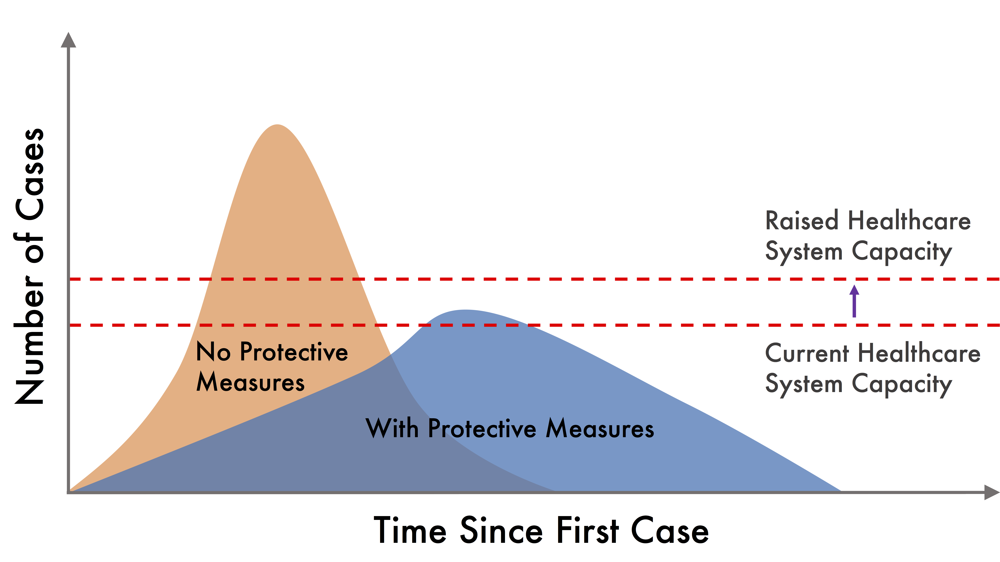
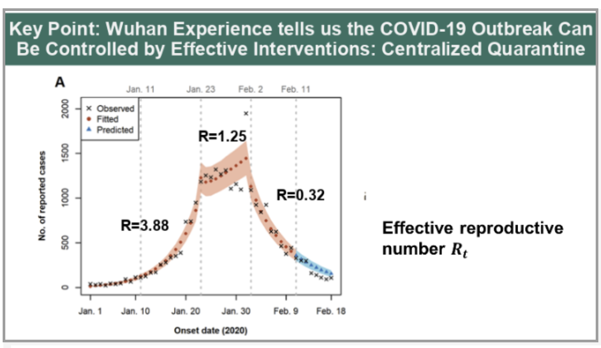
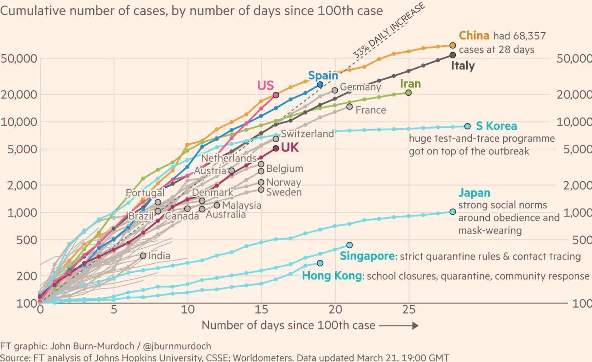
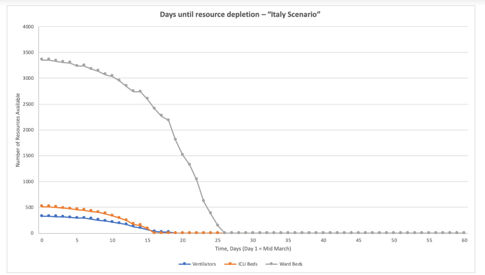
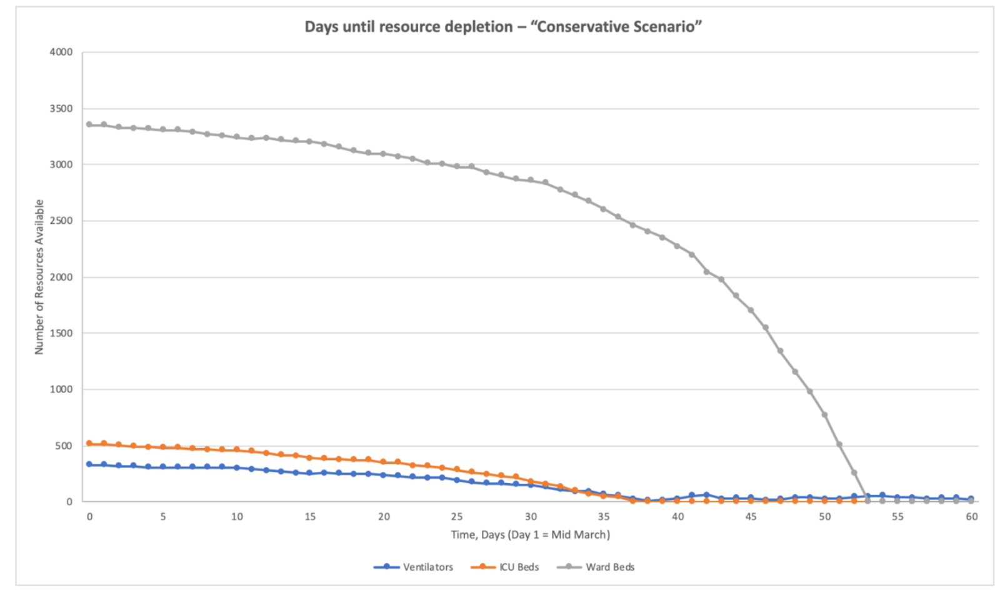
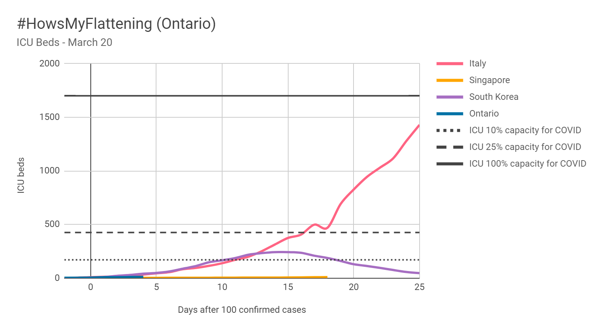
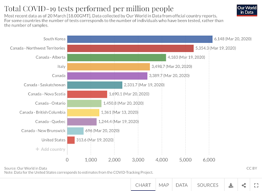

#HowsMyFlattening: Choosing Ontario’s COVID-19 Curve
March 21, 2020
By now, we all know the #FlattenTheCurve story. COVID-19 threatens to rapidly overwhelm the healthcare system’s capacity to provide critical care (which is required by 5-11% of cases overall according to the CDC). “War-time triage” of ventilators is being reported in Italy, where physicians are rationing scarce resources and leaving some patients without care. With suppression measures such as social distancing, we can lower the pandemic peak ideally to land within healthcare (surge) capacity (Figure 1). Any chance of success will require immediate and sustained action (must read: the hammer and the dance).

Figure 1. The general COVID-19 Strategy: Dual Goals of “Flattening the Curve” and “Increasing Healthcare System Capacity”.
We focus attention on critical care (ICU) because a portion of patients, both young and old, will require intensive care support to survive the disease (2-4.2% of those aged 20-44, up to between 6.3-29% of those aged 85+).
Ontario only has approximately 1900 critical care beds (with 1300 ventilation capable), which are almost always full with non-COVID related conditions. If ICU support is available as seen in Singapore and South Korea, fatality rate tracks around 0.5-1% . If the system becomes overwhelmed, however, the disease-related fatality rate looks more like Italy at 5%. This chilling figure ignores the almost certain increase in mortality for patients who suffer heart attacks, strokes, multisystem trauma, and other severe non-COVID ailments who now cannot access critical care.
#FlatteningTheCurve requires aggressive non pharmacologic interventions (NPIs) such as social distancing and travel restrictions to reduce disease spread through human contact. Flattening the curve also buys time to increase healthcare capacity and validate novel therapeutics or vaccines to respond to the COVID-19 pandemic. Scientifically, NPIs aim to reduce the basic reproductive number, R0 (the number of people, on average, each individual infects) from COVID-19s baseline of 2-3 to below 1.0. As we have seen in Hubei, China, only then will we be able to contain the spread of disease (Figure 2).

Figure 2. Outbreak is contained when R0 drops below 1. Increasingly aggressive quarantine measures described here by Dr Lin of Harvard eventually decreased the new case count.
What does all this mean for Ontario?
We can learn from watching how the COVID-19 pandemic played out in other jurisdictions. Each day, we have a decision to make: do we want to follow the curve of places like Italy, which is suffering, or South Korea, with its herculean response (Figure 3)? We must #FlattenTheCurve now and choose the right path to save Ontarian lives.

Figure 3. Cumulative Case Comparison Between Jurisdictions. Canada is still tracking exponentially. Lower and flatter is better. From https://www.ft.com/coronavirus-latest.
In a worst-case scenario, Ontario follows Italy to rapid ICU resource depletion
What does Italy look like?
Italy has been devastated by this pandemic, with at least 53,578 cases and 4825 deaths (as of March 21). There are widespread reports of the health system being overwhelmed by the sheer number of COVID-19 patients with insufficient access to ventilators, hospital beds, human resources, and personal protective equipment. In some cases, physicians have had to resort to wartime triage.
What would Ontario look like in this situation?
As has been modelled by a cross-site collaborative group of University of Toronto Researchers, in an Ontario version of the “Italy Scenario” with a 33% per day case increase, all ICU beds in the province would be filled within 2 weeks (early April 2020 - Figure 4). Ontario physicians (and ethicists) would be forced to choose who can and who cannot be offered a ventilator and who will be left to die. This is the nightmare scenario keeping every doctor in Ontario up at night.

Figure 4. Ontario’s “Italy Scenario” for ICU Bed, Ventilator, and Ward Bed depletion. Ventilators wouldl be depleted in about 2 weeks. From Covid-19 ModCollab March 20 Report (https://www.covid-19-mc.ca/).
A more conservative scenario (Figure 5) (more like Japan with an increase of 7.5% per day) was modeled by the same group of researchers (Ontario growth of new cases is roughly 10% average over past week). While less severe, the model predicts depletion of ICU beds and ventilators in approximately 35 days (late April 2020), and the depletion of ward beds in approximately 7 weeks (mid-May 2020). This will buy a bit of time and decrease the impact of COVID-19, but long-term remains insufficient to truly mitigate the impact of the virus.

Figure 5. Ontario’s “Conservative Scenario” for ICU Bed, Ventilator, and Ward Bed Depletion. Ventilators would run out in a month or so. From Covid ModCollab Report March 18th (https://www.covid-19-mc.ca/).
In arguably the best case, Ontario looks more like South Korea and avoids health system overload
What is happening in South Korea?
South Korea has also been hit hard by COVID-19, with a total of 8,652 cases so far, Unlike Italy, however, the country has “flattened the curve”, with new cases dropping sharply to 82 cases on March 20th, from a peak of 762 per day just weeks ago. One measure that has been critical to this success has been testing on a massive scale, including the use of drive-through testing centres, and testing asymptomatic contacts of known cases in order to identify and isolate carriers before they can spread the disease further.
What would Ontario look like in this scenario?
Following the South Korea trajectory would help us #FlattenTheCurve. Figure 6 below tracks estimated ICU bed needs and shows that if we followed South Korea's curve, we could avoid war-time triage needing only a 25% increase in ICU capacity (already underway and achievable in Ontario). Recent modeling by the https://www.covid-19-mc.ca/ group of researchers similarly shows ICU can be largely mitigated or avoided with South Korea-like measures.

Figure 6. Comparison of Numbers of ICU Beds Required in Ontario, Italy, Singapore, and South Korea. Assumes 5% ICU admission rate and 8 day ICU stay.
The major caveat in this scenario is that South Korea sprung into action very early (with their decision to massively scale up testing in January, when only 4 cases were reported), and has been aggressively testing and tracking cases since with more than 300,000 tests delivered (population of 50 million). Ontario has not mounted a response of an equal magnitude (Figure 7), with 23,384 tests performed at the time of writing (population of 15 million), and significant uncertainty about the true number of cases. This lower relative amount of testing, alongside delays in reporting testing results, could mean that Ontario is significantly further ahead than it appears on the graph, limiting our time to act even further. It is equally important to note that we have to act now as interventions today take 1-2 weeks to manifest on the curve due to the virus’ long incubation time.

Figure 7. Relative COVID-10 Testing in South Korea, USA, and Canadian Provinces / Territories (From https://ourworldindata.org/covid-testing).
What should I do?
The message here is simple. Act decisively now to try and follow South Korea’s curve rather than Italy’s.
System leaders should follow displicined short term NPI suppression like South Korea (test, trace, treat). This boils down to leadership and logistics. In 17 days, South Korea called leaders together to develop an accurate test, and scale up a tech-enabled efficient logistical network to test and trace the whole country. Healthcare workers - major vectors in the pandemic - can be vigilantly protected with thoughtful, precise measures to drop cases to zero. Actions like this can #FlattenTheCurve.
So, declare emergency (check). Tell people to assume they have COVID and stay home (check-ish). And then direct population-scale war time-like efforts in Ontario at increasing testing, tracing, critical care equipment, health care worker protective equipment, and virtualizing the economy.
For everybody else, stay home. Stay away from people physically (virtual = great!) and help drop R0.
Stay safe.
What Is #HowsMyFlattening?
We are physicians, medical students, computational health researchers, designers, and epidemiologists rapidly filtering and presenting emergent COVID-19 data to help Ontarians #FlattenTheCurve. Through our website, HowsMyFlattening.ca, we connect experts and present data in an easy-to-digest, actionable way to help Ontarians and Public Health Leaders act decisively as evidence grows and time ticks by.
If you want to share anything from this post to help influence, go nuts.
If you are a data viz junkie and want to join the team, contact Liam at liam.mccoy@mail.utoronto.ca.
The #HowsMyFlattening Team Contributors Include:
Ben Fine, SM/MD, University of Toronto, Operational Analytics Lab and Institute for Better Health, Trillium Health Partners
Liam G. McCoy, MD/MSc Candidate, University of Toronto Faculty of Medicine; Institute of Health Policy, Management and Evaluation
Jennifer Kwan, MD/CCFP Burlington, ON
Isha Berry, PhD Candidate, University of Toronto; Dalla Lana School of Public Health
Amna Liaqat, PhD Student, University of Toronto Department of Computer Science
David Madras, PhD Candidate, University of Toronto Department of Computer Science; Vector Institute
Jean-Paul R. Soucy, PhD Candidate, University of Toronto; Dalla Lana School of Public Health